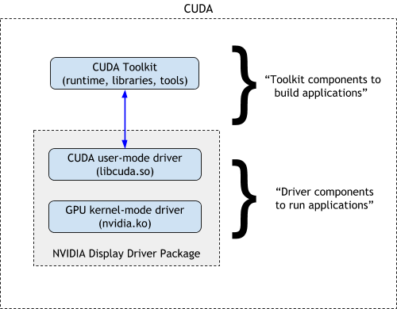
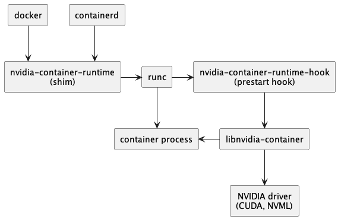
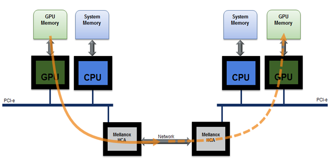

The GPU Node Software Stack From Zero: Drivers, CUDA, NCCL and Fabric Bring-up
A GPU server fresh from the vendor is a box of very expensive silicon that does nothing. Before torch.cuda.is_available() returns True and an 8-node all-reduce runs at line rate, about a dozen pieces of software have to be installed at matching versions, in the right order, on the host or in the container. Each one can be missing, the wrong version or half-loaded. When that happens the failure usually shows up somewhere else: NCCL complains, PyTorch hangs, or a job runs at a tenth of the speed it should.
This chapter goes through that stack one layer at a time, from firmware up to framework wheels. For each layer it covers what the layer is, why it exists, which versions must match, how to install and pin it on Ubuntu, and how to check it is healthy. The chapter then builds a node acceptance script that checks the whole stack and prints PASS or FAIL. An operator runs something like it on every node before a scheduler is allowed to give that node to users. It ends with troubleshooting: reading Xid and ECC errors, running diagnostics, deciding reset vs RMA, and the AMD equivalents.
Conventions:
- Python marked [ran] was executed on an Apple Silicon Mac (CPython 3.14.5, macOS 15) while writing this chapter. The output pasted under it is the real output.
- Package names and versions marked [apt, verified] were read from the Ubuntu 24.04 and NVIDIA CUDA apt repositories on 2026-11-05, using
apt-cache policy <package>(which prints the versions apt could install and from which repository) inside anubuntu:24.04amd64 container. They will drift, so treat them as "as of Nov 2026". - Shell sessions on GPU nodes (
nvidia-smi,ibstat,dcgmi, ...) are untested here, because there was no GPU or InfiniBand hardware. Their output is sketched from the tools' documented formats with the details trimmed. The commands and flags are real. The specific numbers in the sketched output are only examples.
Prerequisites
- Linux and the OS, especially shared libraries and
LD_LIBRARY_PATH, CUDA driver vs runtime vs toolkit, systemd and package management. - Computer architecture: PCIe, DMA, GPUDirect, NVLink and NVSwitch and the map of a GPU server.
- Networking, especially HPC networking: RDMA, InfiniBand, RoCE, EFA.
- Toolkit: the terminal basics, Make and the "compiling C" sections (section 5 builds perftest with
./configureandmake, section 6 builds nccl-tests withmake), and regular expressions (the acceptance script's parsers). - Linux and the OS also for the shell itself: pipes and redirection, scripting essentials (
forloops,$(...)), /proc and /sys, logs: journalctl and dmesg (Xid errors) and how torchrun spawns workers. - Containers and virtualization, for the container half of the host-vs-container split, especially GPUs in containers and IOMMU, VFIO and PCIe passthrough (IOMMU, ACS, SR-IOV).
- Distributed systems: ranks, launchers and collectives; and Networking for how NCCL bootstraps and picks interfaces.
- Helpful: the GPU execution model and writing kernels (where
nvcc, PTX and SASS come from). - Forward links (later chapters, not needed first): collectives internals (algbw/busbw, NCCL algorithms), Slurm from zero (
srun,scontrol, draining, health checks), Kubernetes from zero and orchestration internals (DaemonSets, taints, device plugins, the GPU Operator). Where this chapter uses their commands it explains just enough to follow.
1. The map: what runs where
The layers, bottom to top
Each layer of the stack depends only on the layers below it. Here it is from the bottom up:
lives in changes how often
+--------------------------------------------------+
| your code: train.py, vLLM, ... | container/venv every commit
| framework: torch, jax (+ triton) | container/venv weeks
| CUDA libraries: cuBLAS, cuDNN, NCCL, cuFFT, ... | container/venv weeks (pip wheels)
| CUDA runtime: libcudart.so | container/venv with the framework
+--------------------------------------------------+ <- the container boundary
| user-space driver: libcuda.so, libnvidia-ml.so | HOST (injected) must equal kernel module
| container runtime hook: nvidia-container-toolkit | HOST months
| driver daemons: nvidia-persistenced, fabricmanager| HOST with the driver
| nvidia-dcgm, nv-hostengine |
| RDMA user space: libibverbs, librdmacm, providers | both (see 6) months
| kernel modules: nvidia, nvidia_uvm, nvidia_peermem| HOST months (driver upgrade)
| mlx5_core, mlx5_ib, ib_uverbs |
| Linux kernel | HOST months
| BIOS/UEFI settings, BMC | HOST (board) rarely
| firmware: GPU VBIOS, NVSwitch, NIC (ConnectX), PSU| on the devices rarely, by vendor bundle
+--------------------------------------------------+
Some terms, one sentence each:
- Firmware is software stored on a device's own flash memory that runs on the device itself, for example the GPU's VBIOS or the NIC's firmware. The operating system never runs it. It can only flash a new version.
- The BMC (baseboard management controller) is a small computer on the motherboard with its own network port. It lets you power-cycle the server, open its console and flash firmware even when the OS is dead.
- A kernel module (
.kofile) is code loaded into the running Linux kernel. GPU and NIC drivers are kernel modules because only the kernel may program device registers, handle interrupts and map device memory. - The user-space driver (
libcuda.so) is the library your process calls to talk to that kernel module. It is part of the "driver", not part of "CUDA", and it must have exactly the same version as the kernel module. - The CUDA runtime (
libcudart.so) is the friendlier API (cudaMalloc,cudaMemcpy, kernel launches) built on top oflibcuda. It ships with the toolkit and with framework wheels. - The CUDA toolkit is the developer kit: the
nvcccompiler, headers, the runtime and the math libraries. You need it to compile CUDA code, but not to run PyTorch from a wheel.
NVIDIA's own diagram of the boundary between "driver" and "toolkit":

(source)
Why the split is where it is
The dividing line is "kernel vs process". The kernel module and libcuda.so speak a private protocol to each other through ioctl calls on /dev/nvidia* (an ioctl is the generic "send this device a driver-specific command" system call; /dev/nvidia* are the device files the driver creates). Because that protocol changes between driver versions, the two must match exactly. Everything above libcuda uses a stable, versioned API, so it can be newer or older within the rules of section 2.
That one fact explains the host-vs-container split:
- Host only: the kernel is shared by every container on the machine. So
nvidia.ko, and thereforelibcuda.so(which must match it), have to come from the host. The NVIDIA Container Toolkit mounts the host'slibcuda.sointo each GPU container when it starts (section 4). - In the container or venv: the CUDA runtime, cuBLAS, cuDNN, NCCL and the framework. These are ordinary user-space libraries, so each image can bring its own, and two jobs on the same node can use different CUDA runtimes.
So "CUDA 12.8 on the node" is usually a meaningless phrase. The node has a driver. Each image or venv has a runtime. The admin owns the first and the user owns the second.
Taking inventory of a node, layer by layer
These are the commands that answer "what is installed at each layer?" [untested: needs a Linux GPU node]
# firmware / hardware
sudo dmidecode -s system-product-name # e.g. "PowerEdge XE9680"
nvidia-smi --query-gpu=index,name,vbios_version --format=csv,noheader
lspci -nn | grep -Ei 'nvidia|mellanox' # GPUs, NVSwitches, ConnectX NICs
cat /sys/class/infiniband/mlx5_0/fw_ver # NIC firmware, e.g. 28.43.1014
# kernel + modules
uname -r # e.g. 6.8.0-87-generic
cat /proc/driver/nvidia/version # the LOADED nvidia.ko, and whether it is the open flavor
lsmod | grep -E '^(nvidia|mlx5|ib_)' # which modules are loaded
dkms status # which modules are built for which kernels
# user-space driver + daemons
nvidia-smi | head -4 # driver version, max CUDA the driver supports
systemctl is-active nvidia-persistenced nvidia-fabricmanager nvidia-dcgm
# runtime + libraries (per environment, not per node!)
python -c 'import torch; print(torch.__version__, torch.version.cuda, torch.cuda.nccl.version())'
nvcc --version 2>/dev/null | tail -1 # only if a toolkit is installed
Sketch of the interesting lines on an 8x H100 node:
$ cat /proc/driver/nvidia/version
NVRM version: NVIDIA UNIX Open Kernel Module for x86_64 580.95.05 Release Build (dvs-builder@U16-I1-N08-12-1) ...
GCC version: gcc version 13.3.0 (Ubuntu 13.3.0-6ubuntu2~24.04)
$ lsmod | grep -E '^(nvidia|mlx5|ib_)'
nvidia_peermem 16384 0
nvidia_uvm 2088960 4
nvidia_drm 135168 0
nvidia_modeset 1638400 1 nvidia_drm
nvidia 104701952 110 nvidia_uvm,nvidia_peermem,nvidia_modeset
mlx5_ib 520192 0
mlx5_core 2723840 1 mlx5_ib
ib_uverbs 200704 3 nvidia_peermem,rdma_ucm,mlx5_ib
Tools in that block, one line each: dmidecode reads the motherboard's description of itself (model, BIOS version); lspci lists every device on the PCIe bus (PCIe); lsmod lists the kernel modules currently loaded (modprobe <name> loads one, modprobe -r <name> unloads it); dkms is explained below; systemctl is-active asks systemd whether a service is running.
The modules: nvidia is the core driver. nvidia_uvm handles unified memory and is needed by CUDA. nvidia_modeset and nvidia_drm handle display and are harmless on servers. nvidia_peermem lets the NIC DMA directly into GPU memory (GPUDirect RDMA). mlx5_core and mlx5_ib are the ConnectX NIC driver and its InfiniBand/RDMA part. ib_uverbs exposes RDMA to user space.
On this Mac, the framework layer exists but there is nothing underneath it. That makes the point that torch.version.cuda describes the wheel, not the machine: [ran]
import torch
print(torch.__version__, torch.version.cuda, torch.cuda.is_available(), torch.backends.mps.is_available())
2.15.0 None False True
The macOS wheel is built without CUDA (None). On Linux, pip install torch 2.15.0 pulls in a whole CUDA user space as wheels. This is the wheel's real dependency list from PyPI on 2026-11-05: [ran]
curl -s https://pypi.org/pypi/torch/json | python3 -c "
import json,sys; d=json.load(sys.stdin); print(d['info']['version'])
[print(r) for r in d['info']['requires_dist'] if 'nvidia' in r or 'cuda' in r]"
2.15.0
cuda-toolkit[cublas,cudart,cufft,cufile,cupti,cusolver,cusparse,nvjitlink,nvrtc,nvtx]==13.2.2; platform_system == "Linux"
cuda-bindings<14,>=13.0.3; platform_system == "Linux" and python_version < "3.15"
nvidia-cudnn-cu13==9.26.0.51; platform_system == "Linux"
nvidia-cusparselt-cu13==0.8.1; platform_system == "Linux"
nvidia-nccl-cu13==2.30.7; platform_system == "Linux"
nvidia-nvshmem-cu13==3.7.2; platform_system == "Linux"
So the default PyPI torch 2.15.0 brings CUDA runtime 13.2.2 and NCCL 2.30.7, and it needs a driver that speaks CUDA 13 (>= 580, see below). No nvcc and no libcuda are in that list. libcuda always comes from the host.
2. Versions and the compatibility rules
Reading the three version numbers
The Linux chapter's table introduced the four "CUDA versions". Here is what each one tells an operator:
$ nvidia-smi | head -4
+-----------------------------------------------------------------------------------------+
| NVIDIA-SMI 580.95.05 Driver Version: 580.95.05 CUDA Version: 13.0 |
+-----------------------------------------+------------------------+----------------------+
$ python -c 'import torch; print(torch.version.cuda)'
13.2
$ nvcc --version | tail -1
Cuda compilation tools, release 12.8, V12.8.93
Driver Version: 580.95.05is the version of the user-space driver thatnvidia-smiloaded. It is read as<branch>.<minor>.<patch>. The branch (580) is what matters for compatibility. Patches inside a branch are bug and security fixes.CUDA Version: 13.0is the newest CUDA API that this driver natively implements. It is not an installed toolkit.torch.version.cudais the runtime the framework was built against and ships with.nvccis the toolkit onPATH, if any. It matters only when you compile extensions. Its major version must matchtorch.version.cuda's major version.
Here the runtime is 13.2 and the driver's native version is 13.0, and that works. The next section explains why.
The four rules
As of CUDA 13.5 (November 2026), from NVIDIA's compatibility guide:
- Backward compatibility. A newer driver runs anything built for an older CUDA. A 620 driver runs a CUDA 11.8 binary.
- Minor-version compatibility (CUDA 11+). Within one CUDA major version, a runtime from a newer minor version runs on any driver at or above that major version's floor, with a limited feature set (features that need a newer driver, such as some PTX JIT paths, will fail). The floors are 11.x:
>= 450.80.02, 12.x:>= 525.60.13, 13.x:>= 580(NVIDIA's own example uses 580.65.06, the driver released with 13.0). This is why runtime 13.2 runs on driver 580. - Forward compatibility across major versions needs the
cuda-compat-<major>-<minor>package, and only on datacenter GPUs (plus some RTX "NGC-ready" SKUs and Jetson, NVIDIA's embedded boards). That package is a newerlibcuda.soplaced in/usr/local/cuda-X.Y/compat/and loaded throughLD_LIBRARY_PATH. It runs on top of an older kernel module, and only on specific supported driver branches. - Architecture support is separate. The runtime and the binary must also know your GPU. Each GPU has a compute capability (
sm_80for A100,sm_90for H100/H200,sm_100for B200). A binary contains machine code (SASS) for some capabilities and maybe PTX, an intermediate code the driver can JIT-compile for newer ones. CUDA addedsm_90support in 11.8 and Blackwellsm_100in 12.8. A CUDA 12.4 wheel on a B200 therefore fails withno kernel image is available for execution on the deviceeven with a perfect driver.
Rules 1 to 3 as code, so you can paste in the two numbers from a node and get an answer: [ran]
# cuda_compat.py - can this CUDA runtime run on this driver? (rules as of CUDA 13.5 / Nov 2026)
MIN_DRIVER = {11: (450, 80, 2), 12: (525, 60, 13), 13: (580, 65, 6)} # minor-version-compat floor per major
def v(s):
return tuple(int(x) for x in s.split("."))
def verdict(driver, runtime, datacenter_gpu=True):
d, (major, minor) = v(driver), v(runtime)[:2]
native_major = max(m for m, floor in MIN_DRIVER.items() if d >= floor) if d >= MIN_DRIVER[11] else None
if native_major is None:
return "FAIL: driver older than any CUDA 11+ floor"
if major <= native_major:
return f"OK: driver speaks CUDA {native_major}.x; runtime {runtime} runs (backward/minor-version compat)"
if datacenter_gpu:
return f"NEEDS cuda-compat-{major}-{minor}: newer major than driver, forward-compat package (datacenter GPUs only)"
return "FAIL: runtime major newer than driver and forward compat is datacenter-only"
if __name__ == "__main__":
for drv, rt, dc in [("550.54.15", "12.1", True), ("550.54.15", "12.8", True), ("575.57.08", "13.2", True),
("575.57.08", "13.2", False), ("580.95.05", "13.2", True), ("620.70.06", "11.8", True),
("418.87.01", "12.1", True)]:
print(f"driver {drv:<10} runtime {rt:<5} dc={dc!s:<5} -> {verdict(drv, rt, dc)}")
assert verdict("580.95.05", "13.2").startswith("OK")
assert verdict("575.57.08", "13.2").startswith("NEEDS")
assert verdict("575.57.08", "13.2", False).startswith("FAIL")
driver 550.54.15 runtime 12.1 dc=True -> OK: driver speaks CUDA 12.x; runtime 12.1 runs (backward/minor-version compat)
driver 550.54.15 runtime 12.8 dc=True -> OK: driver speaks CUDA 12.x; runtime 12.8 runs (backward/minor-version compat)
driver 575.57.08 runtime 13.2 dc=True -> NEEDS cuda-compat-13-2: newer major than driver, forward-compat package (datacenter GPUs only)
driver 575.57.08 runtime 13.2 dc=False -> FAIL: runtime major newer than driver and forward compat is datacenter-only
driver 580.95.05 runtime 13.2 dc=True -> OK: driver speaks CUDA 13.x; runtime 13.2 runs (backward/minor-version compat)
driver 620.70.06 runtime 11.8 dc=True -> OK: driver speaks CUDA 13.x; runtime 11.8 runs (backward/minor-version compat)
driver 418.87.01 runtime 12.1 dc=True -> FAIL: driver older than any CUDA 11+ floor
The script does not check rule 4 (architecture). To check that on a GPU, run python -c 'import torch; print(torch.cuda.get_arch_list(), torch.cuda.get_device_capability())' and make sure your device's sm_XY (or an older PTX) is in the list. [untested]
Which driver branch ships with which toolkit
Each CUDA minor release is built and tested with one driver branch, and its cuda-compat package contains that branch's libcuda. Reading the cuda-compat-* versions from NVIDIA's apt repo gives the pairing [apt, verified]:
| CUDA toolkit | cuda-compat package version (= driver branch) |
|---|---|
| 12.4 | 550.163.01 |
| 12.6 | 560.35.05 |
| 12.8 | 570.211.01 |
| 12.9 | 575.57.08 |
| 13.0 | 580.196.07 |
| 13.1 | 590.48.01 |
| 13.2 | 595.112.07 |
| 13.3 | 610.57.04 |
| 13.4 | 615.71.10 |
| 13.5 | 620.70.06 |
The package versions are the latest patch of each branch, not the version that originally shipped with the toolkit. Use this table to see which branch belongs with which toolkit, not to find exact minimums.
The CUDA container images encode the same rules in an environment variable that the container toolkit checks at launch. From nvidia/cuda:13.0.2-base-ubuntu24.04 (trimmed, [ran] on 2026-11-05 by inspecting the image):
CUDA_VERSION=13.0.2
NVIDIA_REQUIRE_CUDA=cuda>=13.0 brand=tesla,driver>=535,driver<536 brand=tesla,driver>=550,driver<551
brand=tesla,driver>=565,driver<566 brand=tesla,driver>=570,driver<571 brand=tesla,driver>=575,driver<576 ...
Read it as: "this image needs a driver that natively speaks CUDA >= 13.0, or one of the datacenter ("tesla") branches 535/550/565/570/575, which can run it through the bundled forward-compat libcuda". Those are the branches NVIDIA supports for forward compatibility. A driver from any other pre-580 branch is refused.
How a version mismatch shows up
| Symptom | Layer | Cause | Fix |
|---|---|---|---|
Failed to initialize NVML: Driver/library version mismatch |
kernel module vs libnvidia-ml |
apt upgraded the user-space libraries, but the old nvidia.ko is still loaded |
reboot (or unload and reload the modules, the driver install reference) |
CUDA driver version is insufficient for CUDA runtime version / torch.cuda.is_available() is False with a warning |
runtime vs driver | runtime major is newer than the driver | upgrade the driver, use a cu12x wheel, or cuda-compat |
no kernel image is available for execution on the device |
binary vs GPU | wheel or extension built without your sm_XY |
newer wheel, or rebuild with TORCH_CUDA_ARCH_LIST |
The detected CUDA version (12.8) mismatches the version that was used to compile PyTorch (13.2) |
nvcc vs torch |
compiling an extension with the wrong toolkit | point CUDA_HOME at a toolkit with the matching major version |
cudaErrorSystemNotReady / "system not yet initialized" (error 802) |
Fabric Manager | NVSwitch system and FM not running or not finished | section 3 |
nvidia-smi hangs for seconds, first CUDA call slow |
persistence | no persistence daemon, so the driver tears down state between processes | persistence mode |
libcuda.so.1: cannot open shared object file in a container |
container runtime | started without --gpus or without the NVIDIA runtime |
section 4 |
To see which libraries a process actually loaded, use the LD_DEBUG and /proc/<pid>/maps recipes in the Linux chapter. The one-line version for CUDA: [untested]
python -c 'import torch; torch.zeros(1).cuda(); import os; os.system(f"grep -oE \"/[^ ]*(libcuda|libcudart|libnccl)[^ ]*\" /proc/{os.getpid()}/maps | sort -u")'
# /usr/lib/x86_64-linux-gnu/libcuda.so.580.95.05 <- host driver
# /venv/lib/python3.12/site-packages/nvidia/cu13/lib/libcudart.so.13 <- wheel runtime
# /venv/lib/python3.12/site-packages/nvidia/nccl/lib/libnccl.so.2 <- wheel NCCL
Moved to the reference part: Installing and upgrading the NVIDIA driver on Ubuntu. Read it when you need it.
3. Driver-level services and GPU health
Persistence mode
Normally the kernel driver tears down a GPU's state when the last process using it exits, and rebuilds it when the next process opens it. On datacenter GPUs that rebuild takes from hundreds of milliseconds to a few seconds per GPU. It makes every nvidia-smi call slow, and it resets settings such as application clocks between jobs. Persistence mode keeps the driver state alive with no clients. The supported way to get it is the nvidia-persistenced daemon, which holds the device files open. The older nvidia-smi -pm 1 sets a legacy flag inside the driver. [untested]
$ sudo systemctl enable --now nvidia-persistenced
$ nvidia-smi --query-gpu=index,persistence_mode --format=csv,noheader
0, Enabled
...
7, Enabled
$ time nvidia-smi -L >/dev/null # with persistence: well under a second on an idle node
Fabric Manager: required on NVSwitch systems
On an HGX/DGX board, the 8 GPUs are not wired directly to each other. Each GPU connects to several NVSwitch chips, and the switches route NVLink traffic between them. Someone has to program the switches' routing tables and assign GPUs to partitions at boot. That is Fabric Manager (FM), a host daemon (nvidia-fabricmanager.service). Until FM has finished, CUDA on these systems refuses to start, and new CUDA processes get cudaErrorSystemNotReady. PCIe GPUs (L4, L40S, H100 PCIe) and machines without NVSwitch don't need FM.
Rules (as of driver 620, from the Fabric Manager user guide):
- For drivers before 620, the FM package version must match the driver version exactly. A 580.95.05 driver with FM 580.82.07 refuses to start. This is why the pinning file above includes
src:nvidia-fabricmanager. Starting with 620, FM is versioned separately (the repo hasnvidia-fabricmanageras a transitional package tonvidia-fabricmanager-direct 2.0.0[apt, verified]). I haven't seen this on hardware, so check the guide for which FM version goes with which driver. - On HGX B200/B300, the 4th-generation NVSwitches share their design with InfiniBand switches, and FM also needs the NVLink Subnet Manager (
nvlsmpackage) plus an OFED/rdma-core stack. The shippednv-fabricmanager-start.shstarts FM and NVLSM as the platform requires. - Rack-scale NVL72 systems manage NVLink from the switch trays (NVIDIA calls this NMX) and use
nvidia-imexfor cross-node GPU memory sharing. That is beyond a single-node bring-up.
Install, start, verify. [untested]
$ sudo apt install -y nvidia-fabricmanager # pinned to the driver branch by the pinning package
$ sudo systemctl enable --now nvidia-fabricmanager
$ systemctl is-active nvidia-fabricmanager
active
$ nvidia-smi -q -i 0 | grep -i -A 2 Fabric
Fabric
State : Completed
Status : Success
State: In Progress is normal for a few seconds after boot. Anything other than Completed / Success once FM is up means the GPU isn't part of the NVLink fabric. Look at journalctl -u nvidia-fabricmanager and /var/log/fabricmanager.log.
NVLink and topology checks
Once FM is happy, check that the links actually trained and at what speed, and look at how GPUs and NICs connect. NVLink error counters in the troubleshooting reference covers the error counters, and P2P checks whether GPUs can reach each other directly. The bring-up version: [untested]
$ nvidia-smi nvlink -s | head -4 # every link should show a speed, none "<inactive>"
GPU 0: NVIDIA H100 80GB HBM3 (UUID: GPU-...)
Link 0: 26.562 GB/s
Link 1: 26.562 GB/s
...
$ nvidia-smi nvlink -s | grep -c 'GB/s' # 8 GPUs x 18 links on H100 = 144
144
$ nvidia-smi topo -m # trimmed
GPU0 GPU1 ... NIC0 NIC1 ... CPU Affinity NUMA Affinity
GPU0 X NV18 ... PIX NODE ... 0-55 0
GPU1 NV18 X ... NODE PIX ... 0-55 0
NIC0 PIX NODE ... X NODE
Legend: NV# = NVLink (# links), PIX = same PCIe switch, NODE = same NUMA node, SYS = across sockets
The two things to check in topo -m: every GPU pair is NV18 (all 18 links, on H100), and every GPU has a NIC at PIX distance. A GPU whose nearest NIC is SYS sends its network traffic across the CPU socket link, which roughly halves its inter-node bandwidth. If that happens, something is wrong with the cabling, the BIOS or the slot assignment.
18 links times 25 GBps per link per direction gives the H100's advertised 450 GBps per direction. The 26.562 shown per link is the raw signalling rate before encoding overhead. NVLink has the arithmetic.
ECC, row remapping, clocks and GPU reset
ECC (error-correcting code) memory stores a few extra check bits per word, so the hardware can fix single-bit flips and at least detect multi-bit ones. A corrected error is silent and harmless; an uncorrected one means data was lost and the process using it is killed. Row remapping is how HBM retires a bad memory row: the GPU records the row and swaps in a spare one at the next reset. These health fields are queryable in one CSV line per GPU. The acceptance script below uses exactly this query. The troubleshooting reference explains how to read row remapping and Xid errors. [untested]
$ nvidia-smi --query-gpu=index,ecc.mode.current,ecc.errors.uncorrected.volatile.total,remapped_rows.pending,remapped_rows.failure,pcie.link.width.current,pcie.link.width.max,clocks_event_reasons.hw_slowdown --format=csv,noheader
0, Enabled, 0, No, No, 16, 16, Not Active
...
$ sudo nvidia-smi -i 3 -r # reset one GPU (needs no processes on it, and on NVSwitch systems often all GPUs)
Two traps. First, the PCIe generation drops on an idle GPU to save power, so check link width at idle and check generation only under load. Second, ECC mode changes take effect only after a reset. ECC should always be enabled on training nodes.
DCGM: the health daemon and diagnostics
DCGM (Data Center GPU Manager) is NVIDIA's fleet-management layer. It runs a host engine daemon (nv-hostengine, packaged as the nvidia-dcgm service) that watches health continuously, collects metrics (exported via dcgm-exporter to Prometheus, a widely used time-series database that polls services for numbers and feeds dashboards and alerts) and runs diagnostic suites (dcgmi diag). As of DCGM 4.7.1 the Ubuntu packages are split by CUDA major version: datacenter-gpu-manager-4-cuda13, -cuda12, -cuda11, -cuda-all [apt, verified]. The CUDA-specific part is the stress kernels the diagnostics run. [untested]
$ sudo apt install -y datacenter-gpu-manager-4-cuda13
$ sudo systemctl enable --now nvidia-dcgm
$ dcgmi discovery -l | head -6 # does DCGM see all 8 GPUs and the NVSwitches?
8 GPUs found.
+--------+----------------------------------------------------------------------+
| GPU ID | Device Information |
+--------+----------------------------------------------------------------------+
| 0 | Name: NVIDIA H100 80GB HBM3 |
$ dcgmi health -s a # enable background watches for all subsystems
$ dcgmi health -c # ...and later ask whether anything tripped
$ dcgmi diag -r 1 # seconds: deployment/software checks
$ dcgmi diag -r 2 # ~minutes: + short stress, PCIe, memory
Level 1 belongs in every job prolog (a prolog is a script the scheduler runs on each node just before a job starts; an epilog runs just after it ends. Slurm's are introduced in Slurm from zero). Level 2 belongs in acceptance and after any hardware intervention. Levels 3 and 4 (tens of minutes) are for burn-in and RMA evidence. Running diagnostics with dcgmi diag in the troubleshooting reference has example failure output and a Slurm script.
Sharing one GPU: MIG and MPS
Training nodes use whole GPUs. Inference and RL rollout fleets often have many small workloads, such as a 1B reward model or a tokenizer service, and one H100 per small workload is wasteful. There are three ways to share a GPU:
| Isolation | How it works | Use when | |
|---|---|---|---|
| Time-slicing (default) | none: shared memory space, context switches | the driver round-robins contexts | dev boxes |
| MPS (Multi-Process Service) | memory not isolated, compute can be capped | a daemon merges many processes' work into one GPU context so their kernels run concurrently | many cooperative processes of one user, e.g. MPI ranks or a rollout worker pool |
| MIG (Multi-Instance GPU, A100/H100/B200) | hardware: separate SMs, L2 slices, memory controllers | the GPU is partitioned into up to 7 instances, each of which looks like its own GPU | multi-tenant inference, guaranteed QoS (quality of service: a promised share of throughput and latency) |
MIG. Each profile name is <compute slices>g.<memory>gb. An H100 80GB has 7 compute slices, so it can be split into seven 1g.10gb instances. [untested]
$ sudo nvidia-smi -i 0 -mig 1 # enable MIG mode on GPU 0 (may require a GPU reset)
$ nvidia-smi mig -i 0 -lgip # list GPU-instance profiles and how many fit
| 0 MIG 1g.10gb 19 7/7 9.75 No 16 1 0 |
| 0 MIG 3g.40gb 9 2/2 39.25 No 60 3 0 |
| 0 MIG 7g.80gb 0 1/1 79.25 No 132 7 0 |
$ sudo nvidia-smi mig -i 0 -cgi 3g.40gb,1g.10gb,1g.10gb -C # create GPU instances + compute instances
$ nvidia-smi -L
GPU 0: NVIDIA H100 80GB HBM3 (UUID: GPU-...)
MIG 3g.40gb Device 0: (UUID: MIG-1f0e...)
MIG 1g.10gb Device 1: (UUID: MIG-7a31...)
MIG 1g.10gb Device 2: (UUID: MIG-c55d...)
$ CUDA_VISIBLE_DEVICES=MIG-7a31... python serve.py # a process sees exactly one instance
$ sudo nvidia-smi mig -i 0 -dci && sudo nvidia-smi mig -i 0 -dgi # tear down
MPS. [untested]
export CUDA_MPS_PIPE_DIRECTORY=/tmp/mps-pipe CUDA_MPS_LOG_DIRECTORY=/tmp/mps-log
sudo nvidia-smi -i 0 -c EXCLUSIVE_PROCESS # only the MPS server may open the GPU directly
nvidia-cuda-mps-control -d # start the control daemon
CUDA_MPS_ACTIVE_THREAD_PERCENTAGE=25 python worker.py & # each client capped at 25% of SMs
CUDA_MPS_ACTIVE_THREAD_PERCENTAGE=25 python worker.py &
echo quit | nvidia-cuda-mps-control # stop
The MPS caveat: a fatal fault in one client (an illegal memory access, for example) can take down every client sharing that MPS server. MPS is for cooperating processes, not for isolating tenants. On Kubernetes (taught later, in Kubernetes from zero), the NVIDIA device plugin (an agent on each node that tells the cluster how many GPUs, or MIG slices, the node has) and the GPU Operator (a bundle that installs the driver, container toolkit and device plugin on every node) expose MIG and time-slicing as schedulable resources (device plugins, GPU Operator components).
4. Containers and the GPU
What --gpus all actually does
A container is a normal process with its own namespaces (containers chapter). This section is the operator's view of GPUs in containers; re-read what a CUDA program needs from the host and the NVIDIA Container Toolkit if the details have faded, and the run flags that matter for ML for docker run options such as --rm, --gpus and --ulimit. To use the GPU it needs three things the image cannot provide: the device nodes /dev/nvidia0..7, /dev/nvidiactl and /dev/nvidia-uvm; the host's libcuda.so and libnvidia-ml.so, which match the host's kernel module; and binaries such as nvidia-smi. The NVIDIA Container Toolkit injects all three when the container starts. It works as a hook in the OCI runtime (OCI and runc) that runs after the container's filesystem is set up but before your process starts:

(source)
The proof that libcuda is not in the image: this is the CUDA 13.0 base image, inspected without a GPU [ran]:
docker run --rm --platform linux/amd64 nvidia/cuda:13.0.2-base-ubuntu24.04 \
bash -c 'find / -xdev -name "libcuda.so*"; echo ---; env | grep ^LD_LIBRARY_PATH; dpkg -l | grep -E "cuda|nvidia" | awk "{print \$2, \$3}"'
(trimmed to the relevant lines)
/usr/local/cuda-13.0/compat/libcuda.so.580.95.05
/usr/local/cuda-13.0/compat/libcuda.so.1
/usr/local/cuda-13.0/compat/libcuda.so
---
LD_LIBRARY_PATH=/usr/local/nvidia/lib:/usr/local/nvidia/lib64:/usr/local/cuda/lib64
cuda-compat-13-0 580.95.05-0ubuntu1
cuda-cudart-13-0 13.0.96-1
cuda-toolkit-13-0-config-common 13.0.96-1
cuda-toolkit-13-config-common 13.0.96-1
cuda-toolkit-config-common 13.0.96-1
The only libcuda in the image is the forward-compat copy (rule 3 above), which is used only when the host driver is too old. Otherwise the toolkit mounts the host's /usr/lib/x86_64-linux-gnu/libcuda.so.<host-version> and the dynamic loader uses that one. The image brings the runtime (cuda-cudart-13-0) and nothing else. The -runtime and -devel image variants add the math libraries and nvcc.
Installing and configuring the toolkit
As of Nov 2026 the toolkit is nvidia-container-toolkit 1.20.1 in NVIDIA's repo [apt, verified]. There are two ways to hand GPUs to containers. The legacy runtime hook is what --gpus uses. CDI (Container Device Interface) is a vendor-neutral YAML spec that lists the device nodes and mounts. Docker 25+, Podman and containerd all understand CDI, and Kubernetes is moving to it. [untested]
sudo apt install -y nvidia-container-toolkit
sudo nvidia-ctk runtime configure --runtime=docker && sudo systemctl restart docker # legacy hook path
docker run --rm --gpus all nvidia/cuda:13.0.2-base-ubuntu24.04 nvidia-smi -L
sudo nvidia-ctk cdi generate --output=/etc/cdi/nvidia.yaml # CDI path
nvidia-ctk cdi list # nvidia.com/gpu=0 ... nvidia.com/gpu=7, nvidia.com/gpu=all
docker run --rm --device nvidia.com/gpu=all nvidia/cuda:13.0.2-base-ubuntu24.04 nvidia-smi -L
Regenerate the CDI spec after every driver upgrade. It contains versioned library paths such as libcuda.so.580.95.05, so a stale spec points at files that no longer exist.
For multi-node training containers you also need the RDMA devices (/dev/infiniband/*), --ulimit memlock=-1 (RDMA pins memory) and a larger /dev/shm. Those are listed in NCCL with docker containers.
5. The RDMA side of the node
The GPUs talk to each other inside the node over NVLink. Between nodes they talk through NICs on the backend network, usually InfiniBand or RoCE (cluster networks). The networking foundations chapter explains RDMA, queue pairs and verbs. This section is the operator's view of the same thing: what to install, what healthy looks like, and how to measure it.
The software: inbox rdma-core vs DOCA-OFED
The RDMA stack has the same shape as the GPU stack:
libnccl / UCX / MPI / perftest (apps)
libibverbs + librdmacm + provider (libmlx5) <- user space, "rdma-core"
------------------------------------------------
ib_uverbs, rdma_ucm, ib_core <- kernel RDMA core
mlx5_ib (RDMA part) + mlx5_core (NIC) <- kernel driver for ConnectX
ConnectX firmware <- on the NIC
Two ways to get it:
- Inbox: the mainline Linux kernel's
mlx5drivers plus Ubuntu'srdma-corepackages. In Ubuntu 24.04 these arerdma-core,ibverbs-utils,infiniband-diagsandperftest, all version 50.0 (perftest 24.01) [apt, verified]. This is enough for NCCL over InfiniBand or RoCE on recent kernels. - DOCA-OFED: NVIDIA's packaged, newer copy of the same drivers and libraries, plus tools such as
mlnx_qosandshow_gids. It is the successor to MLNX_OFED, which NVIDIA has been retiring in favor of DOCA (DOCA host installation). Vendors' reference stacks and the NVIDIA GPU Operator's network operator usually assume it. It installs DKMS kernel modules, so the same header and pinning discipline as the GPU driver applies.
Pick one per fleet. Mixing inbox and OFED libraries on the same node produces confusing errors such as libibverbs: Warning: couldn't load driver 'mlx5'.
Inbox install and first look. [untested]
sudo apt install -y rdma-core ibverbs-utils infiniband-diags perftest
lsmod | grep -E '^(mlx5_ib|ib_uverbs|rdma_ucm)'
rdma link show
# link mlx5_0/1 state ACTIVE physical_state LINK_UP netdev ibp24s0
# link mlx5_1/1 state ACTIVE physical_state LINK_UP netdev ibp41s0
# ...
# link mlx5_8/1 state ACTIVE physical_state LINK_UP netdev enp157s0f0np0 <- frontend Ethernet NIC
NIC firmware and port mode
ConnectX NICs are both InfiniBand and Ethernet adapters, and the port type is a firmware setting. A NIC that arrived configured as Ethernet will never join your InfiniBand fabric, however correct the software is. The tools are NVIDIA's MFT (Mellanox Firmware Tools): mst to discover devices, mlxconfig for settings and mlxfwmanager for firmware. [untested]
sudo mst start
sudo mlxfwmanager --query | grep -E 'Device Type|Versions|FW' # firmware per NIC, and if an update is available
sudo mlxconfig -d /dev/mst/mt4129_pciconf0 query | grep -E 'LINK_TYPE|ADVANCED_PCI_SETTINGS|ATS'
# LINK_TYPE_P1 IB(1) <- 1 = InfiniBand, 2 = Ethernet
sudo mlxconfig -d /dev/mst/mt4129_pciconf0 set LINK_TYPE_P1=1 # takes effect after a reboot or firmware reset
Firmware must be the same on every NIC in the fleet, as with the GPU VBIOS and NVSwitch firmware. Most vendors ship a firmware bundle per server model. Apply the whole bundle rather than individual components.
InfiniBand for operators: ports, the subnet manager, LIDs
An InfiniBand fabric does not configure itself. A subnet manager (SM), running on a managed switch or on one host as opensm, discovers every port, assigns each one a LID (a 16-bit local address used for switch forwarding) and computes the routing tables. Until the SM has done this, a cabled and lit port sits in the Initialize state and carries no traffic. Each port moves through Down → Initialize → Armed → Active. Physical state (LinkUp, Polling, Disabled) is the electrical layer underneath. Each device also has a permanent 64-bit GUID, like a MAC address.
Healthy output. [untested]
$ ibstat mlx5_0
CA 'mlx5_0'
CA type: MT4129
Number of ports: 1
Firmware version: 28.43.1014
Port 1:
State: Active
Physical state: LinkUp
Rate: 400
Base lid: 112
SM lid: 1
Port GUID: 0x946dae03004f1a2c
Link layer: InfiniBand
$ ibv_devinfo -d mlx5_0 | grep -E 'hca_id|fw_ver|state|active_mtu|link_layer'
hca_id: mlx5_0
fw_ver: 28.43.1014
state: PORT_ACTIVE (4)
active_mtu: 4096 (5)
link_layer: InfiniBand
How to read a bad port:
| What you see | Meaning | Look at |
|---|---|---|
State: Initialize, Physical state: LinkUp |
cable fine, no SM reached this port | is opensm / the switch SM running? is the port on the right fabric partition? |
State: Down, Physical state: Polling |
no electrical link | cable, transceiver, switch port disabled |
Rate: 200 on a 400G fabric |
link trained at a lower speed or fewer lanes | bad cable or transceiver, usually. Reseat, then swap |
link_layer: Ethernet on a port meant for IB |
firmware port type | mlxconfig LINK_TYPE_P1 |
Everything ibstat prints is also in sysfs (the /sys tree of kernel-provided files, see /proc and /sys) as plain files, which is what scripts should read: [untested]
for p in /sys/class/infiniband/*/ports/*; do
echo "$(basename $(dirname $(dirname $p)))/$(basename $p): $(cat $p/state) | $(cat $p/rate) | $(cat $p/link_layer)"
done
# mlx5_0/1: 4: ACTIVE | 400 Gb/sec (4X NDR) | InfiniBand
For the whole fabric, iblinkinfo (every link the SM sees) and ibdiagnet (a full fabric scan with error report) are switch-team tools, but worth knowing by name.
RoCE in one page
RoCEv2 carries the InfiniBand transport inside UDP/IP over Ethernet (foundations). For an operator, three things differ from IB:
- No subnet manager, so addressing is IP. Each port has a table of GIDs (global IDs). Each entry is an IP address paired with a RoCE version. NCCL must be told which entry to use with
NCCL_IB_GID_INDEX. Index 3 is typically RoCEv2 over IPv4, but always check rather than assume. - Losslessness is your problem. RDMA's transport tolerates loss badly, so RoCE fabrics use PFC (priority flow control, pause frames on one traffic class) and ECN (switches mark packets during congestion, and the receiver sends back CNP packets that slow the sender). The NIC and the switches must agree on which traffic class carries RoCE.
- MTU: jumbo frames (9000) on the Ethernet, and a 4096 RDMA MTU on top.
Finding the right GID index with nothing but sysfs: [untested]
d=/sys/class/infiniband/mlx5_0/ports/1
for i in $(ls $d/gids); do
gid=$(cat $d/gids/$i 2>/dev/null); type=$(cat $d/gid_attrs/types/$i 2>/dev/null)
[ "$gid" != "0000:0000:0000:0000:0000:0000:0000:0000" ] && echo "$i $type $gid $(cat $d/gid_attrs/ndevs/$i 2>/dev/null)"
done
# 0 IB/RoCE v1 fe80:0000:0000:0000:... ens1np0
# 1 RoCE v2 fe80:0000:0000:0000:... ens1np0
# 2 IB/RoCE v1 0000:0000:0000:0000:0000:ffff:0a00:130c ens1np0
# 3 RoCE v2 0000:0000:0000:0000:0000:ffff:0a00:130c ens1np0 <- IPv4 10.0.19.12, RoCEv2: use 3
Counters: how to tell a sick link from a busy one
Each port keeps hardware counters in /sys/class/infiniband/<dev>/ports/<n>/counters/ (IB-spec counters) and hw_counters/ (mlx5-specific counters, the interesting ones for RoCE). The ones to alert on:
| Counter | Healthy | Non-zero means |
|---|---|---|
symbol_error |
0, or growing very slowly | bit errors on the wire: cable or transceiver degrading |
link_downed |
0 since boot | the link flapped. Each flap stalls or kills NCCL jobs |
port_rcv_errors |
0 | malformed packets received |
local_link_integrity_errors, excessive_buffer_overrun_errors |
0 | link quality / flow-control trouble |
port_xmit_wait |
grows under load | time spent waiting for credit: congestion, not a fault |
hw_counters/out_of_sequence, packet_seq_err (RoCE) |
~0 | packet loss on a "lossless" fabric: PFC/ECN misconfigured |
hw_counters/np_cnp_sent, rp_cnp_handled (RoCE) |
grows under load | congestion control is working, which is fine in moderation |
port_xmit_data and port_rcv_data count bytes divided by 4. The IB spec counts in 4-byte words, and many hand-rolled dashboards are off by 4x because of it. To turn two samples into a rate: [ran]
# ib_counters.py - turn two samples of port_xmit_data into Gb/s.
# port_xmit_data / port_rcv_data count octets DIVIDED BY 4 (IB spec "PortXmitData"), so multiply by 4.
def gbps(sample0, sample1, seconds):
return (sample1 - sample0) * 4 * 8 / seconds / 1e9
if __name__ == "__main__":
# e.g. two reads of /sys/class/infiniband/mlx5_0/ports/1/counters/port_xmit_data 10 s apart
s0, s1 = 1_000_000_000, 1_000_000_000 + 117_187_500_000
print(f"{gbps(s0, s1, 10.0):.1f} Gb/s")
assert abs(gbps(0, 125_000_000_000, 10.0) - 400.0) < 1e-9
375.0 Gb/s
perfquery -x (from infiniband-diags) reads the same counters through the management interface, and perfquery -x -R resets them. Resetting before a test makes any errors during the test stand out.
perftest: measuring one link
ib_write_bw measures a single NIC-to-NIC path with RDMA writes and no NCCL involved. It is the first thing to run between two new nodes. network/README.md explains what it does and does not isolate. [untested]
# node A (server)
ib_write_bw -d mlx5_0 -F --report_gbits -D 10
# node B (client): same flags + server address. RoCE: add -x <gid index> on both sides
ib_write_bw -d mlx5_0 -F --report_gbits -D 10 10.0.19.12
---------------------------------------------------------------------------------------
#bytes #iterations BW peak[Gb/sec] BW average[Gb/sec] MsgRate[Mpps]
65536 ... 0.00 391.27 0.746
---------------------------------------------------------------------------------------
ib_write_lat -d mlx5_0 -F 10.0.19.12 # latency: expect low single-digit microseconds
The expected result is a little below line rate. A 400 Gb/s NDR port typically gives somewhere in the high 300s (why). In bytes: 400 Gb/s / 8 = 50 GB/s per NIC, and 400 GB/s for a node with eight. Run the test for every NIC pair (mlx5_0 to mlx5_0, and so on), not just one. A single slow rail limits every collective that uses it.
--use_cuda=<gpu index> makes perftest register GPU memory instead of host memory. That tests GPUDirect RDMA, next. It requires a perftest built with CUDA support (./configure from the perftest repo with CUDA headers available; ./configure is the conventional script that inspects your system and writes a Makefile, after which make compiles the C code, see the Make and compiling-C sections of the toolkit). I have not checked whether Ubuntu's perftest package is built that way, so assume you have to build it.
GPUDirect RDMA: the NIC reads GPU memory
Without GPUDirect RDMA (GDR), NCCL sending a GPU buffer to another node copies it to host memory first and lets the NIC read it from there. With GDR, the NIC DMAs straight out of GPU memory across the PCIe switch they share (why that matters). For that, the RDMA stack must be able to register GPU memory: pin it and get bus addresses the NIC can use. There are two mechanisms:
nvidia_peermem, a kernel module shipped with the driver (since R470) that plugs into the RDMA core's peer-memory interface. Load it withmodprobe nvidia_peermemand persist it in/etc/modules-load.d/.- DMA-BUF, the mainline Linux mechanism for sharing device memory between drivers (kernel 5.12+). It needs the open GPU kernel modules and a NIC driver and rdma-core that support it. Recent NCCL versions use it automatically when it is available, so
nvidia_peermemis not needed on such systems.
The GDR path between two nodes: the orange line goes GPU memory, PCIe, NIC (HCA), network, NIC, PCIe, GPU memory, and never touches system memory or the CPU.

(source)
The PCIe side must also cooperate. ACS (Access Control Services) on PCIe switches forces peer-to-peer traffic up to the root complex, which kills GDR performance. Disable it for bare metal (how). An IOMMU in translating mode can do the same, so iommu=pt (passthrough) on the kernel command line (the boot options the bootloader hands to Linux; you can read the current ones in /proc/cmdline) is common on GPU nodes. ACS and the IOMMU were introduced in IOMMU, VFIO and PCIe passthrough.
Checking that GDR is actually used. The NCCL log is the ground truth. NCCL_DEBUG=INFO makes NCCL print its setup decisions and NCCL_DEBUG_SUBSYS limits that to some subsystems; torchrun ... stands for whatever launch command your job uses (how NCCL builds its connections and how to read these lines). [untested]
$ lsmod | grep nvidia_peermem || echo "no peermem (fine if NCCL uses DMA-BUF)"
$ NCCL_DEBUG=INFO NCCL_DEBUG_SUBSYS=INIT,NET torchrun ... 2>&1 | grep -E 'GPU Direct RDMA|DMA-BUF|via NET'
NCCL INFO NET/IB : GPU Direct RDMA (nvidia-peermem) enabled for HCA 0 'mlx5_0'
NCCL INFO Channel 00/0 : 0[0] -> 8[0] [send] via NET/IB/0/GDRDMA
via NET/IB/0/GDRDMA means GDR is used. via NET/IB/0 without /GDRDMA means traffic is staged through host memory. via NET/Socket means no RDMA at all, which is the order-of-magnitude slowdown network debug teaches you to spot. The exact wording of these log lines changes between NCCL versions, so grep loosely.
6. NCCL: install, configure, test
Which NCCL you are running
NCCL is the library that implements collectives (all-reduce, all-gather, ...) across GPUs. It picks NVLink, PCIe, InfiniBand or sockets per connection (collectives internals). It is a user-space library, so it lives with the framework, not on the host: torch 2.15.0 pins nvidia-nccl-cu13==2.30.7, while the CUDA apt repo had libnccl2 2.32.3-1+cuda13.4 and PyPI had nvidia-nccl-cu13 2.32.3 [apt, verified; ran]. Two NCCLs on one node is normal. What matters is which one your process loaded. [untested]
python -c 'import torch; print(torch.cuda.nccl.version())' # (2, 30, 7): what torch was built with
NCCL_DEBUG=VERSION torchrun --nproc_per_node 2 your_script.py 2>&1 | grep 'NCCL version'
# NCCL INFO NCCL version 2.30.7+cuda13.2 # what actually got loaded
An LD_LIBRARY_PATH or LD_PRELOAD (a list of libraries the dynamic loader loads into the process before anything else, so their symbols win) pointing at a system libnccl.so.2 can make torch load a different NCCL than the one it was built with. Sometimes that is deliberate, to pick up a fix. Sometimes it is an accident that causes hangs. The NCCL version line settles which one you got.
Network plugins
NCCL natively speaks IB verbs (which covers RoCE) and TCP sockets. Other fabrics use a net plugin, a shared library NCCL loads at start-up (libnccl-net.so, or one chosen with NCCL_NET_PLUGIN). Examples: AWS's aws-ofi-nccl for EFA, Google's plugins for GPUDirect-TCPX/gIB, and the SHARP plugin for in-network reductions on IB. If a cloud image ships a plugin, it must be visible inside your container too. A missing plugin shows up as a silent fallback to NET/Socket.
The environment variables an operator sets
The full list is in NCCL's env docs. Debug variables are explained in network debug and performance variables in network benchmarks. The ones that are really node configuration rather than tuning, and so belong in /etc/nccl.conf or the cluster's job environment (the networking chapter showed which interface NCCL picks and why NCCL_SOCKET_IFNAME matters):
# /etc/nccl.conf (NCCL reads KEY=VALUE lines from here; the environment overrides it)
NCCL_SOCKET_IFNAME=enp157s0f0np0 # bootstrap/OOB (out-of-band setup traffic) interface: the frontend NIC, NOT docker0/lo
NCCL_IB_HCA=mlx5_0,mlx5_1,mlx5_2,mlx5_3,mlx5_4,mlx5_5,mlx5_6,mlx5_7 # backend NICs only; excludes the frontend mlx5_8
NCCL_IB_GID_INDEX=3 # RoCE only: the RoCEv2/IPv4 GID found above
# NCCL_NET_GDR_LEVEL=PIX # only use GDR when NIC and GPU share a PCIe switch (default heuristics are usually right)
# NCCL_TOPO_DUMP_FILE=/tmp/topo.xml # dump what NCCL thinks the topology is, for debugging
Everything else (NCCL_ALGO, NCCL_PROTO, channel counts) is tuning. Leave it at the defaults unless a benchmark shows a specific improvement.
nccl-tests: single node, then two, then all
nccl-tests is the standard burn-in. Network benchmarks shows how to build it against the NCCL your PyTorch uses. For multi-node runs build with MPI (make MPI=1 MPI_HOME=/usr/lib/x86_64-linux-gnu/openmpi; make VAR=value passes a setting to the Makefile, see Make in the toolkit). The bring-up sequence: [untested]
Just enough to read the launch lines below. MPI (Message Passing Interface) is the older HPC standard for multi-process programs; nccl-tests uses it only to start one process per GPU on every node and tell each its rank, the job torchrun does for PyTorch (launchers). mpirun -np 16 -N 8 --hostfile hosts starts 16 processes, 8 per node, on the machines listed one per line in the file hosts (over SSH), and -x VAR copies an environment variable to all of them. srun -N 2 --ntasks-per-node=8 --gpus-per-task=1 is Slurm's way to do the same on 2 allocated nodes, with one GPU per process; --mpi=pmix tells Slurm to hand MPI the rank information through the PMIx interface. Slurm and srun are taught in Slurm from zero. In the nccl-tests flags, -b/-e are the smallest and largest message size, -f 2 doubles the size each step, and -g is GPUs per process.
# 1. one node, NVLink only: one process driving 8 GPUs
./build/all_reduce_perf -b 8 -e 8G -f 2 -g 8
# 2. two nodes, one process per GPU (this is the shape training uses)
srun -N 2 --ntasks-per-node=8 --gpus-per-task=1 --mpi=pmix ./build/all_reduce_perf -b 8 -e 8G -f 2 -g 1
# or without Slurm:
mpirun -np 16 -N 8 --hostfile hosts -x NCCL_DEBUG=WARN -x NCCL_IB_HCA ./build/all_reduce_perf -b 8 -e 8G -f 2 -g 1
# 3. the whole cluster, then bisect if a run is slow (halve the node list until the slow node is isolated)
Output, trimmed:
# size count type redop root time algbw busbw #wrong time algbw busbw #wrong
# (B) (elements) (us) (GB/s) (GB/s) (us) (GB/s) (GB/s)
8589934592 2147483648 float sum -1 ... ... ... 0 ... ... ... 0
# Out of bounds values : 0 OK
# Avg bus bandwidth : ...
Read busbw at the large sizes and #wrong everywhere. A non-zero #wrong means data corruption, which is a hardware problem: fail the node. algbw (algorithm bandwidth) is simply message size divided by time. \text{busbw} = \text{algbw} \times 2(n-1)/n for all-reduce, where 2(n-1)/n is the per-rank traffic factor of the ring all-reduce (the full derivation is in the next chapter, algbw vs busbw). It is normalized so that it can be compared with link bandwidth regardless of n (derivation). For n=8 the factor is 2 \cdot 7/8 = 1.75. What "good" looks like depends on the SKU and the NCCL version. Don't use a number from a blog post. Record the value from a node you know is good and fail nodes that fall well below it. The acceptance script below has exactly that knob. Network README lists measured numbers for several systems.
When nccl-tests hangs or is slow, work through network debug and NCCL performance debug. Most of what you'll find is in the layers covered above: a missing nvidia_peermem, a port at the wrong rate, the wrong GID index, or FM not running.
Moved to the reference part: AMD / ROCm equivalents. Read it when you need it.
7. Bring-up order: the runbook
Bring a node up from the bottom of the stack to the top, and test each layer before moving to the next. A failure is then always in the layer you just added.
| # | Step | Gate (don't continue until) |
|---|---|---|
| 1 | Flash the vendor firmware bundle (BIOS, BMC, GPU VBIOS, NVSwitch, NIC) | versions match the fleet manifest |
| 2 | BIOS: SR-IOV/IOMMU as your design needs, Above-4G decoding on (lets the BIOS map devices with large memory windows, such as GPUs, above the 4 GB address line), ACS off (bare metal), performance power profile | lspci shows all GPUs and NICs at full width |
| 3 | OS image with kernel + headers pinned, nouveau blacklisted | uname -r = manifest |
| 4 | GPU driver (open, pinned) | nvidia-smi -L lists all GPUs |
| 5 | nvidia-persistenced, Fabric Manager (+ NVLSM on B200/B300) |
fabric Completed/Success, all NVLinks active |
| 6 | DCGM | dcgmi diag -r 2 passes |
| 7 | RDMA stack + NIC port type + nvidia_peermem / DMA-BUF |
every backend port Active at line rate, zero error counters |
| 8 | Container toolkit (+ CDI spec) | nvidia-smi -L inside a container |
| 9 | Single-node nccl-tests | #wrong = 0, busbw at the fleet baseline |
| 10 | Two-node ib_write_bw per rail, then two-node nccl-tests |
GDR in the log, busbw at the baseline |
| 11 | Hand to the scheduler, with the acceptance script as a health check | runs on every boot and as a prolog/epilog |
Write the expected versions for steps 1 to 8 into a manifest checked into git. Then the acceptance script can check "is this node what we said it is", not just "does this node work".
Moved to the reference part: A node acceptance script, Troubleshooting GPUs: errors, diagnostics and health checks. Read it when you need it.
You can now read
- Debugging PyTorch and Debugging distributed training: the software side of a crash or hang, once the troubleshooting reference has cleared the hardware.
- Network debug and NCCL performance debug: when nccl-tests is slow or hangs.
- Network benchmarks:
torch-dist-bench, nccl-tests, nvbandwidth and what the numbers mean. - The network chapter: fabric generations, NVLink/IB/EFA numbers.
- Kubernetes from zero and Slurm: where the acceptance script plugs in.
- Decentralized training: what changes when the nodes aren't on one fabric.
Parts of this chapter are adapted from Stas Bekman's Machine Learning Engineering Open Book (CC BY-SA 4.0).
Further reading
- NVIDIA, CUDA Compatibility: minor-version and forward compatibility, the source of the rules in section 2.
- NVIDIA, Driver Installation Guide, especially the Ubuntu page and version locking.
- NVIDIA, open-gpu-kernel-modules.
- NVIDIA, Fabric Manager User Guide.
- NVIDIA, DCGM User Guide.
- NVIDIA, MIG User Guide and MPS.
- NVIDIA, Container Toolkit.
- NVIDIA, GPUDirect RDMA.
- NVIDIA, DOCA host installation (DOCA-OFED).
- linux-rdma/rdma-core and linux-rdma/perftest.
- NVIDIA, NCCL environment variables and nccl-tests.
- AMD, ROCm documentation and rccl-tests.